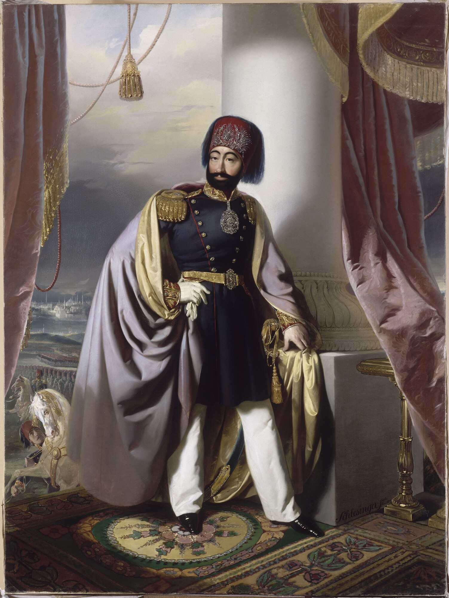

| önceki |  |
sonraki |
II. Mahmud (Osmanlıca: محمود ثانی; d. 20 Temmuz 1785, İstanbul – ö. 1 Temmuz 1839, İstanbul), Osmanlı İmparatorluğu'nun otuzuncu padişahı ve 95. İslam halifesidir. Babası I. Abdülhamid, annesi Nakşidil Valide Sultan'dır. 1808 ile 1839 yılları arasında 31 yıl hüküm sürmüştür. Osmanlı tarihinin en radikal ve kapsamlı inkılaplarını gerçekleştiren, Yeniçeri Ocağı'nı tarihe gömen, modern bürokrasi, ordu, tıp ve eğitim kurumlarıyla Türkiye Cumhuriyeti'nin temellerini atan büyük bir hükümdardır. Fes, ceket giydirmesi ve getirdiği Batılı yenilikler sebebiyle tutucu çevrelerce "Gâvur Padişah" olarak itham edilmiş; ancak devleti mutlak bir dağılmaktan kurtararak Tanzimat Dönemi'nin yolunu açmıştır.
Saray Çatısında Ölümden Kurtuluş ve Sened-i İttifak (1808)
20 Temmuz 1785 tarihinde Topkapı Sarayı'nda doğdu. Amcası III. Selim'in saraydaki serbest terbiye ortamında modernleşme fikirleriyle büyüdü. 28 Temmuz 1808 günü Alemdar Mustafa Paşa'nın sarayı kuşatması üzerine tahtını kaybetmekten korkan ağabeyi IV. Mustafa cellatlarını göndererek III. Selim'i şehit etti; ardından Şehzade Mahmud'un hücresini bastırdı. Sarayın cariyesi Cevrî Kalfa'nın ocaktan aldığı kızgın kül ve közleri cellatların yüzüne savurarak zaman kazandırması ve sadık ağaların yardımıyla sarayın damına kaçırılarak ölümden kıl payı kurtarıldı. Kapıları kırıp içeri giren Alemdar Paşa tarafından 23 yaşında tahta çıkarıldı.
Cülusunun hemen ardından Anadolu ve Rumeli'nin güçlü derebeyleri (âyânlar) ile masaya oturarak Sened-i İttifak'ı imzaladı (Ekim 1808). Padişahın mutlak yetkilerini tarihte ilk kez sınırlandıran bu anayasal belgeyi kabul eden II. Mahmud, merkezi otoritesini güçlendirdikçe tüm âyânları aşama aşama tasfiye ederek merkeziyetçi idareyi tekeline aldı.
VAK'A-İ HAYRİYYE (1826): Yeniçeri Ocağı'nın Kaldırılışı
Asırlardır ıslahatçı padişah ve sadrazamları katleden, devlete ayak bağı olan Yeniçeri Ocağı'nı ortadan kaldırmak II. Mahmud'un hayat gayesi oldu. 1826 yılı Haziran ayında yeni kurulan "Eşkinci Ocağı"na karşı yeniçerilerin Etmeydanı'nda kazan kaldırıp isyan etmesi üzerine padişah Sancak-ı Şerif'i çıkardı. Halkın, medreselilerin ve Topçu Kara Cehennem İbrahim Ağa komutasındaki topçu birliklerinin desteğiyle yeniçeri kışlaları top ateşine tutuldu.
Tarihe Vak'a-i Hayriyye (Hayırlı Olay) olarak geçen bu hadiseyle Yeniçeri Ocağı tamamen lağvedildi; Bektaşi tekkeleri kapatıldı. Yerine modern üniformalı, talimli ve düzenli Asâkir-i Mansûre-i Muhammediyye adıyla modern Osmanlı ordusu kuruldu.
Yunan İsyanı, Navarin Baskını ve Mısır Buhranı
Saltanatı boyunca ağır dış krizler ve parçalanma tehlikesiyle boğuştu:
- Yunanistan'ın Bağımsızlığı (1829): 1821'de başlayan Mora İsyanı'na İngiltere, Fransa ve Rusya müdahale etti. 20 Ekim 1827'de Navarin Limanı'nda demirleyen Osmanlı-Mısır donanması müttefik armadalarca gafil avlanarak yakıldı. 1828-1829 Osmanlı-Rus Harbi sonrasında imzalanan Edirne Antlaşması ile Osmanlı İmparatorluğu'ndan ayrılarak bağımsızlığını kazanan ilk tebaa Yunanistan oldu.
- Kavalalı Mehmed Ali Paşa İsyanı: Mora yardımı karşılığı vadedilen Suriye valiliği verilmeyince Mısır Valisi Kavalalı'nın oğlu İbrahim Paşa komutasındaki Mısır ordusu Osmanlı ordusunu yenerek Kütahya'ya kadar dayandı. Padişah, meşhur "Denize düşen yılana sarılır" sözüyle ezeli düşman Rusya'dan yardım istedi; Rus donanması Boğaz'a demirledi ve 1833'te Hünkâr İskelesi Antlaşması imzalandı. 1838'de İngiltere ile imzalanan Balta Limanı Ticaret Sözleşmesi ile yabancı tüccarlara geniş imtiyazlar tanındı.
Topyekûn Devlet, Toplum ve İdare İnkılapları
II. Mahmud, Osmanlı bürokrasisini ve cemiyet hayatını baştan aşağı modernize etti:
- Bakanlıklar Sistemi: Asırlık Divan-ı Hümayun lağvedilerek Batı tarzı modern bakanlıklar (Hariciye, Dahiliye, Maliye Nezaretleri) kuruldu; Sadrazamlık makamı "Başvekalet"e dönüştürüldü. Meclis-i Vâlâ-yı Ahkâm-ı Adliye kurularak kanun yapma süreci modernleştirildi.
- Kıyafet İnkılabı: Sarık, kavuk ve cübbe memurlara yasaklandı; yerine Tunus'tan getirilen modern fes, pantolon ve setre giyme mecburiyeti getirildi. Devlet dairelerine padişahın portresi (Tasvir-i Hümayun) asıldı.
- Tıbbiye ve Harbiye Mektepleri: 1827'de modern tıbbın temeli olan Mekteb-i Tıbbiye-i Şâhâne ve 1834'te kurmay subay yetiştiren Mekteb-i Harbiye açılarak Avrupa usulünde eğitim başlatıldı. Avrupa başkentlerine ilk kez tahsil için öğrenciler gönderildi. İlköğretim İstanbul'da mecburi kılındı.
- Haberleşme, Nüfus ve Mülkiyet: İlk resmi Osmanlı gazetesi Takvim-i Vekâyi (1831) yayımlandı. İlk modern nüfus ve mülk sayımı yapıldı (1831). İlk Posta Teşkilatı ve Karantina idaresi kuruldu. Müsadere usulü (devletin vefat eden memurların malına el koyması) tamamen kaldırılarak özel mülkiyet ve miras hakkı kanuni güvenceye kavuşturuldu.
Vefatı
Gündüz ve gece süren ağır inkılap çalışmaları, savaşların ve Mısır meselesinin getirdiği derin kederle yıpranan II. Mahmud, yakalandığı tüberküloz (verem) hastalığı sebebiyle 1 Temmuz 1839 tarihinde Çamlıca'daki köşkünde 53 yaşında vefat etti. Cenazesi İstanbul Çemberlitaş'taki muazzam Sultan II. Mahmud Türbesi'ne defnedildi.
Ailesi
- Eşleri:
- Bezmialem Vâlide Sultân (Abdülmecid'in annesi, Gureba Hastanesi ve Dolmabahçe Camii banisi)
- Pertevniyal Vâlide Sultân (Abdülaziz'in annesi, Aksaray Valide Camii banisi)
- Hacıye Hoşyar Kadın
- Aşubican Kadın
- Zernigar Kadın
- Erkek çocukları: (Sonraki 2 Osmanlı padişahının babasıdır)
- Abdülmecid (Osmanlı Padişahı, 1823 – 1861)
- Abdülaziz (Osmanlı Padişahı, 1830 – 1876)
- Şehzade Murad (1811 – 1812)
- Şehzade Bayezid (1812 – 1812)
- Şehzade Abdülhamid (1813 – 1825)
- Şehzade Süleyman (1817 – 1819)
- Şehzade Mehmed (1822 – 1822)
- Şehzade Nizameddin (1835 – 1838)
- Kız çocukları:
- Adile Sultân (Kaptan-ı Derya Mehmed Ali Paşa ile evlendi, şair ve hayırsever hanım sultan)
- Saliha Sultân (Halil Rifat Paşa ile evlendi)
- Mihrimah Sultân (Said Paşa ile evlendi)
- Atiye Sultân (Rodosizade Fethi Ahmed Paşa ile evlendi)
- Hayriye Sultân
II. Mahmud hakkında daha fazla bilgi için buraya tıklayın.